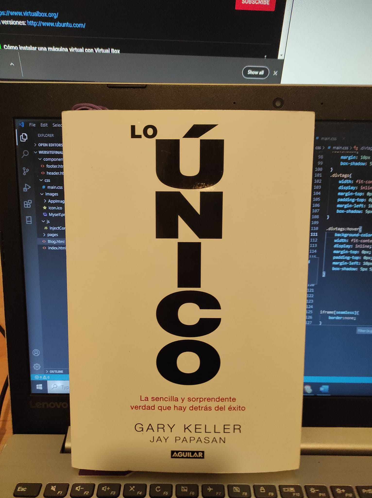
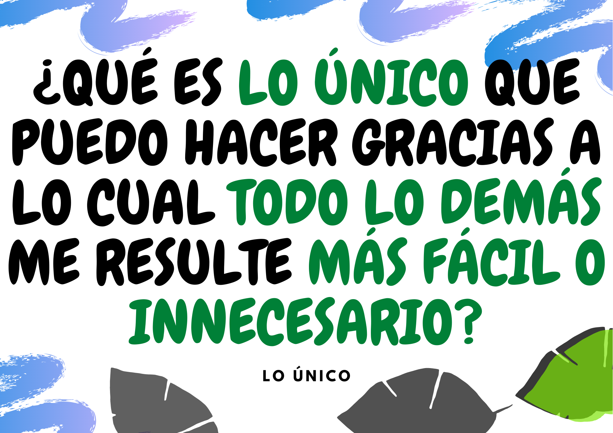
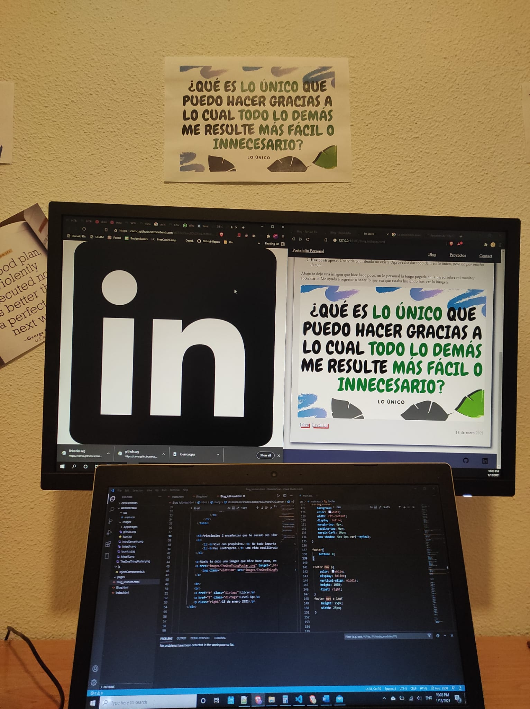

|  |
Es fácil perder el enfoque de tus prioridades y de lo que realmente importa. Por ello es importante tomarte un rato para hacer las preguntas correctas. |
|---|
Abajo te dejo una imagen que hice hace poco, en lo personal la tengo pegada en la pared sobre mi monitor secundario. Me ayuda a regresar a hacer lo que sea que estaba haciendo tras ver la imagen.
No es broma, sí tengo esa foto colgada en la pared
Posdata: Uno de mis propositos de este año es empezar un blog personal muy similar a esto.
Libro Level Up18 de enero 2021